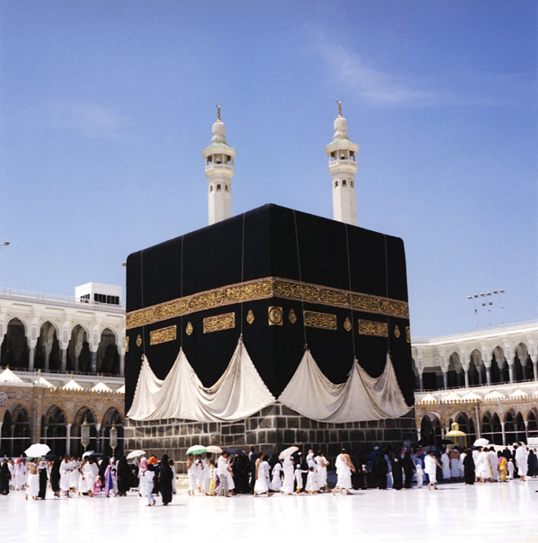
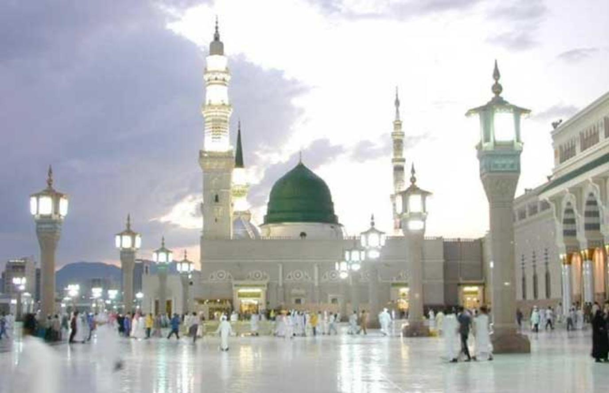
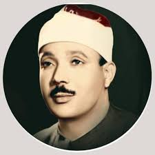
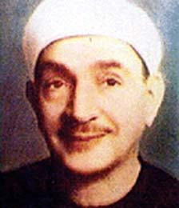

برنامج ااذاعه القران الكريم من القاهره
اذاعه القران الكريم بث مباشر
لا اله الا الله محمد رسول الله
اللهم صلى وسلم على سيدنا محمد
القران الكريم
اذاعه القران الكريم من القاهرة
اذاعه القران الكريم من مكه المكرمه
 
المحصف الالكترونى بجامعه الملك سعود
مصحف الحدر لمراجعة الحفاظ بصوت القارئ الشيخ أحمد ديبان
عبد الباسط عبد الصمد

الشيخ محمد رفعت قيثارة السماء
الشيخ طه الفشنى

الشيخ محمود خليل الحصرى
محمود على البنا
الشيخ محمد صديق المنشاوى